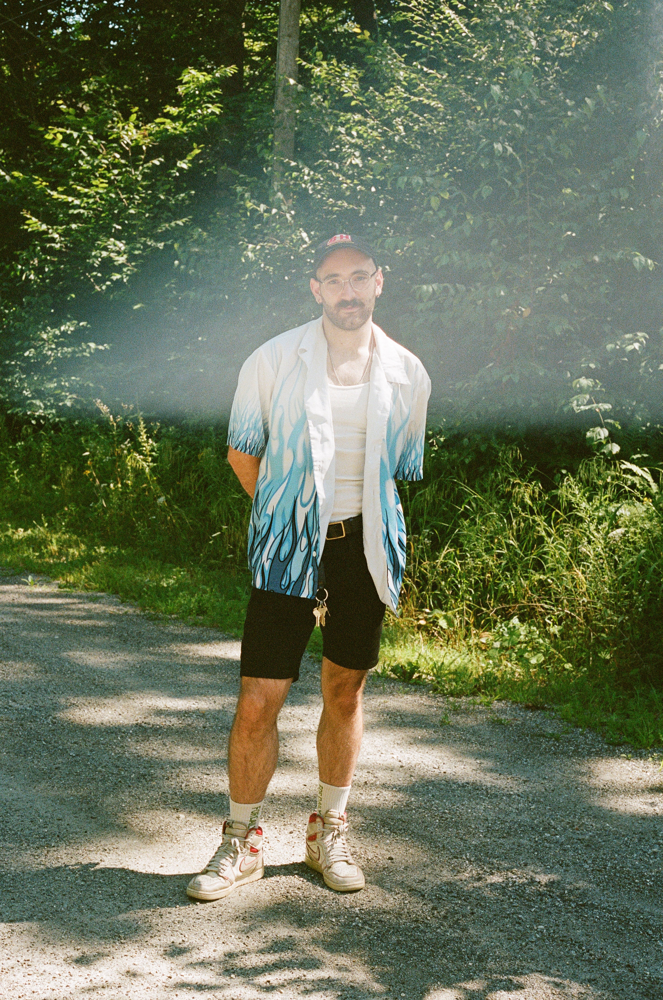

Hailing from Providence, Rhode Island, I'm a graduate of Parsons School of Design,
where I majored in Communication Design and minored in Film Production.
Based out of New York City, I primarily create work within in the world of film that deal with topics of mental health and familal trauma. I specifically focus
on the post-production process, having most recently worked on Apple TV+'s Severance and Showtime's Let the Right One In. I'm currently a Post-Production Coordinator
on the FX Limited Series, American Sports Story: Gladiator.
If you'd like to work together on a project, feel free to shoot me an email!
If you'd like to work together on a project, feel free to shoot me an email!
